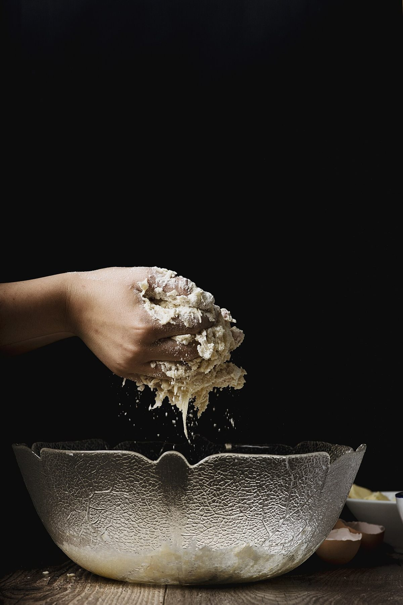

お店について
お店の紹介文は準備中(お問い合わせください)。

| 屋号 | ベーカリーぱん・ＤＡ |
|---|---|
| 所在地 | 兵庫県加古川市別府町別府1055-3 |
| 電話 | 079-437-8080 |
| 代表者 | 準備中(お問い合わせください) |
| 創業 | 準備中(お問い合わせください) |
| 席数 | 準備中(お問い合わせください) |
写真はイメージです


これから追記できる項目
お店からの情報をいただき次第、掲載できる項目です。
- スタッフ紹介 / 準備中
- こだわり / 準備中
- 取扱い商品 / 準備中
試作サンプル(営業用イメージ)
このページは、お店の公式サイトではなく、制作側が作成した試作サンプルです。掲載内容のうち、住所・電話番号・Instagram以外は準備中です。
お店の紹介文は準備中(お問い合わせください)。

| 屋号 | ベーカリーぱん・ＤＡ |
|---|---|
| 所在地 | 兵庫県加古川市別府町別府1055-3 |
| 電話 | 079-437-8080 |
| 代表者 | 準備中(お問い合わせください) |
| 創業 | 準備中(お問い合わせください) |
| 席数 | 準備中(お問い合わせください) |
写真はイメージです
お店からの情報をいただき次第、掲載できる項目です。